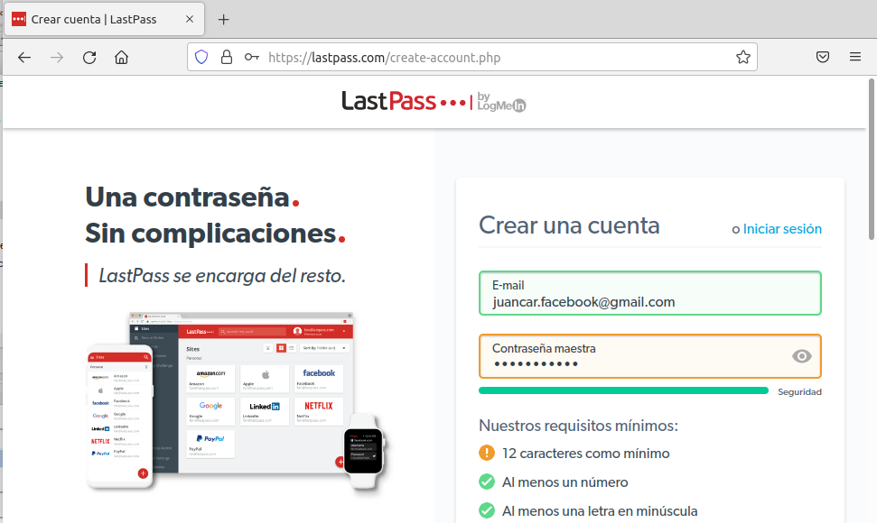
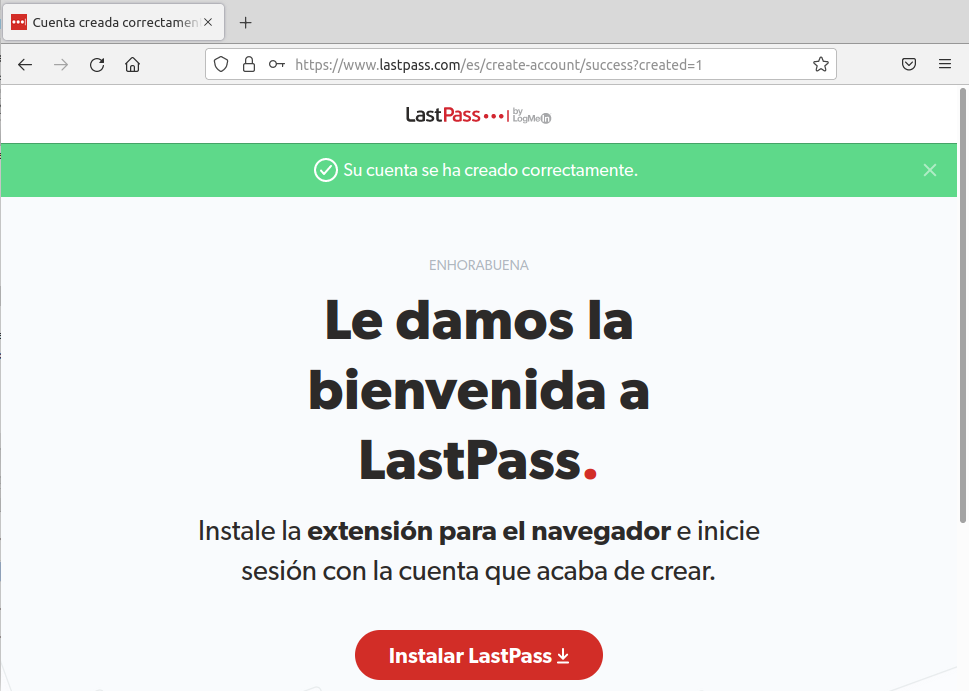
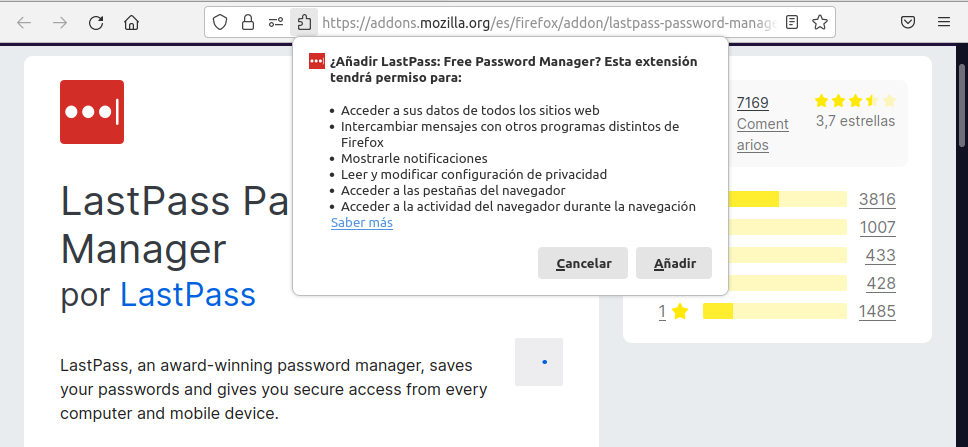
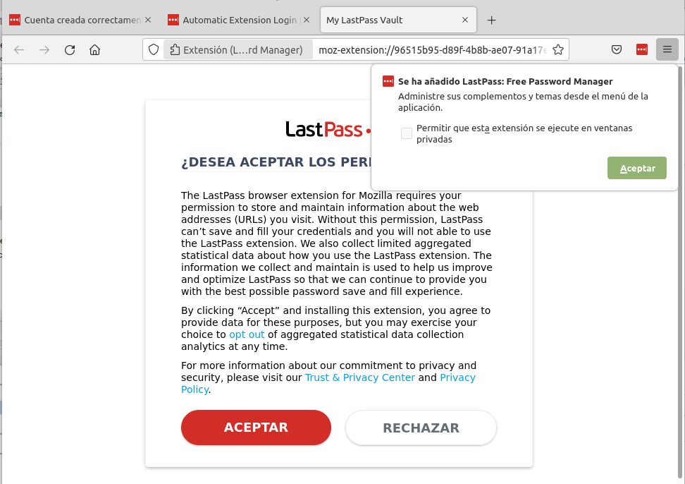
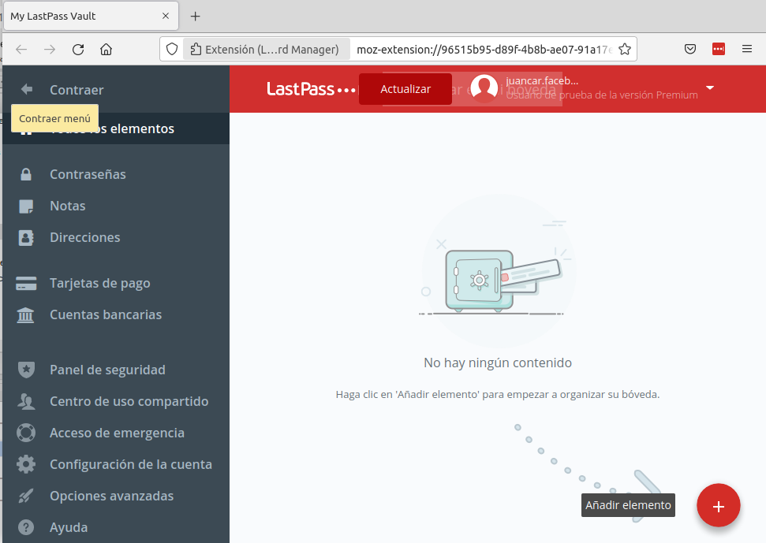
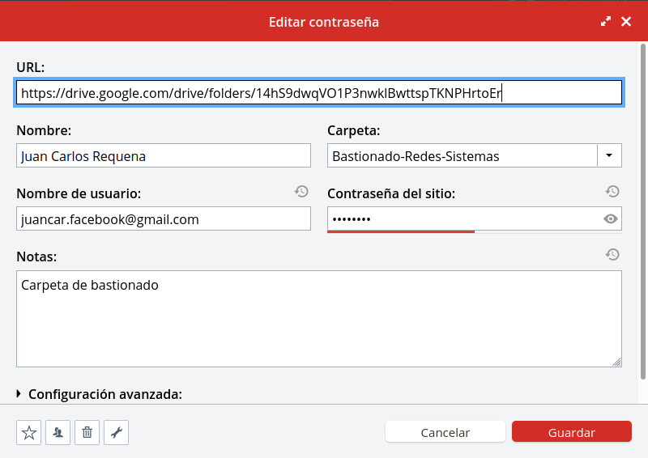
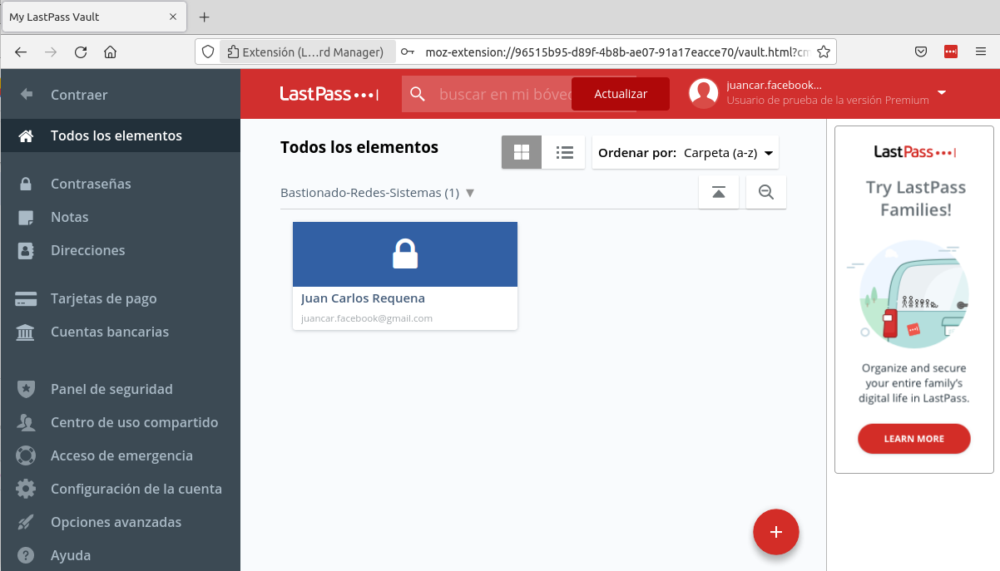
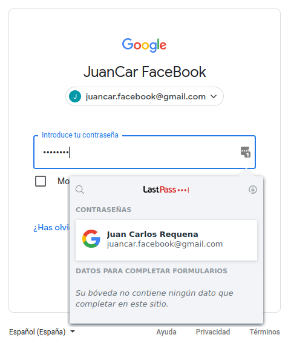

3.1 LastPass
1. Introducción
LastPass es un gestor de contraseñas muy usado y conocido hoy en día que almacena nuestras claves encriptadas en la nube. Esto significa que las contraseñas quedan almacenadas en servidores remotos, protegidas por una contraseña maestra y sincronizadas en todos los navegadores que la aplicación soporta. En el momento que queramos podemos acceder a ellas para usarlas en las páginas que necesitemos.
Además, dispone de una versión general que puede ser gratuita o premium, dependiendo las necesidades personales. Por otro lado, hay una versión empresarial con distintos planes de pago para proteger nuestro negocio. En este caso vamos a utilizar la versión gratuita.
Noticia
En agosto de 2022, la empresa GoTo (anteriormente LogMeIn) ha sufrido una brecha de seguridad en su popular gestor de contraseñas, LastPass. Leer noticia.
2. Instalación y configuración de Lastpass
2.1 Crear una cuenta
En primer lugar hay que registrarse con un correo electrónico y una contraseña maestra. (https://lastpass.com/create-account.php).

Figura 1. Registro en la plataforma.

Figura 2. Cuenta registrada en la plataforma y preparada para instalarse.
2.2. Instalar extensión en Firefox
Una vez creada la cuenta correctamente nos dejará instalarlo (Instalar LastPass).
En el caso de Google Chrome o Firefox, nos llevará a la página de las extensiones para instalarla. En este caso de ejemplo se ha utilizado Firefox.

Figura 3. Agregar a Firefox.
Simplemente, hay que pulsar 'Agregar a Firefox' y nos solicitará si queremos añadir la extensión con una serie de permisos, pulsamos 'Añadir'.

Figura 4. Agregar a Firefox.
A continuación nos redireccionará automáticamente a la pantalla de aceptación de términos donde pulsaremos 'Aceptar'.

Figura 5. Aceptar los permisos.
Una vez aceptado los términos, nos aparece el panel de usuario registrado.

Figura 6. Panel de Lastpass de la cuenta registrada.
El sistema nos indica que no se tiene ningún contenido por lo que pulsaremos en 'Añadir elemento'.
2.3. ¿Cómo funciona LastPass?
Al pulsar en Añadir elemento, nos dejará elegir entre los distintos elementos que podemos utilizar en este programa. Elegimos “Contraseña”.

Figura 7. Añadir elemento contraseña.
Como ejemplo, ponemos la URL del login de Google Drive. Después, el nombre para identificar el elemento, el usuario y contraseña que tengamos en esa página web y le damos a “Guardar”.

Figura 8. Configuración del elemento contraseña.
Una vez guardado, en la parte de todos los elementos (Figura 9), podemos encontrar el recién creado, y podemos hacer uso de este si pasamos el ratón por encima del elemento, entonces, nos redireccionará a la URL que habíamos puesto anteriormente.

Figura 9. Nuevo elemento contraseña creado.
Si además instalamos la extensión de LastPass para nuestro navegador, a la derecha de los campos a rellenar en el login, nos sale un icono, es del LastPass. Si hacemos clic nos desplegará el menú de la imagen, y al darle clic en el elemento que habíamos creado nos rellenará los campos del correo y de la contraseña:

Figura 10. Acceso al drive con la extensión de Lastpass para firefox.
Obra publicada con Licencia Creative Commons Reconocimiento No comercial Compartir igual 4.0